workbuddy
初认识
一小时，从「装上都还没打开」到「能亲手用起来」。
跟着我边听边点，一小时后你就是能带它出门的人 🦐
讲这门课的人，真懂产品也真懂实战
原阿里 B2B
增值业务渠道运营负责人
创业者
北京成长型社交平台创始人
数字化转型顾问
滴滴 · 兑吧 · 颖通
AI 社群创建人
天天拿 WorkBuddy 帮人解决问题
不是产品经理念说明书，是天天拿它干活的人，把你领进门。
破冰举手：在座多少人今天第一次听说 WorkBuddy？举手示意——「这一小时就是为你们准备的」。
六站路线，讲完立刻让你动手
一节课 60 分钟，我们分六站走。每一站，我都讲完立刻让你动手——把未知变可控。
终局，是带它走出去交付价值
这套训练，终局是让你们带着 WorkBuddy 走出去，给真实的商铺、真实的人交付价值。但前提——工具你先得玩明白。
我见过太多人第一次打开就卡在「登录不上」「找不到对话框」「选错模式白干半小时」。今天这一课，就是把所有「第一次的坑」提前替你踩完。
工具顺手，才能把脑子用在真正重要的事上。
现场提问：明天去校门口一家店用 WorkBuddy 做海报，你最大的不确定是什么？（收 2–3 个回答，埋下后续板块伏笔）
跨端互通：挑你顺手的
桌面客户端 / 网页版 / App，三种方式数据互通。把「拥有它」拆成三步可勾选清单，降低第一步门槛。
① 获取
到官方渠道拿到安装包 / 打开网页版
② 安装
按提示完成安装，保持版本更新
③ 登入
手机号或账号走流程，扫码 / 验证码确认身份
安全验证别跳过——它关系你「我的」里的资产安全。
当场做：所有人现在打开 WorkBuddy，完成登入，截图或举手示意「我进来了」，讲师巡场确保无人卡在门口。
下载页长这样：认准官方渠道，别从第三方装。
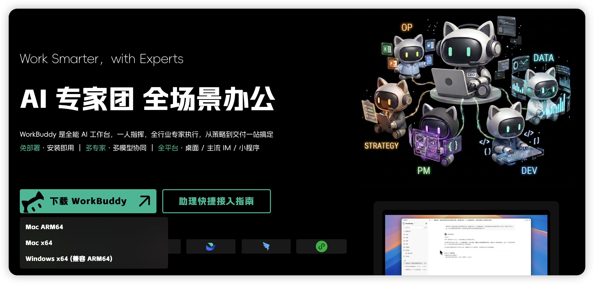
三个高频坑，我得提醒你
网络环境
公司 / 校园网有时拦截——换手机热点往往就通了。
版本过旧
客户端记得保持更新，老版本会缺功能。
账号混淆
用工作号还是个人号，今天定下来，别明天换号记忆全丢。
预防性排错——出门不掉线。
界面像驾驶舱，三区各司其职
左侧 · 工具 / 任务栏
技能、专家、历史对话——你的军火库。
中间 · 对话区
你下指令、看它思考、跟它来回的地方。
右侧 · 产出物预览
网页 / PPT / 文档 / 图片 / 表格，直接在这看。
一句话记住：左边管能力，中间管沟通，右边管成果。
指读三区：在屏幕上用手指 / 鼠标指一遍左中右三区，口头说出每区干嘛。
左侧是你的军火库
技能 Skill
现成专项能力——做图、做表、写文案，一键调用。
专家
更重的专业角色，适合复杂任务。
任务栏 / 历史对话
之前聊过什么、跑过什么任务，全在这回看。
新人不贪多——先把「对话」用顺，技能后面几课再解锁。
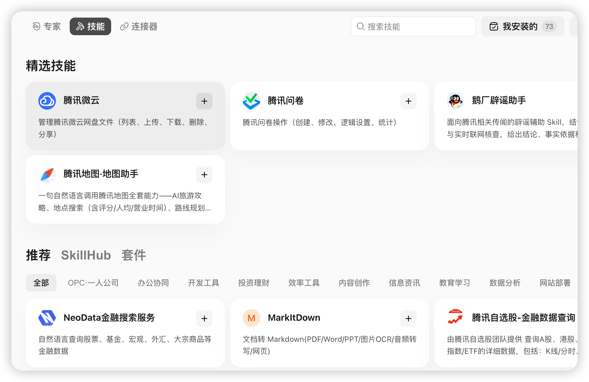
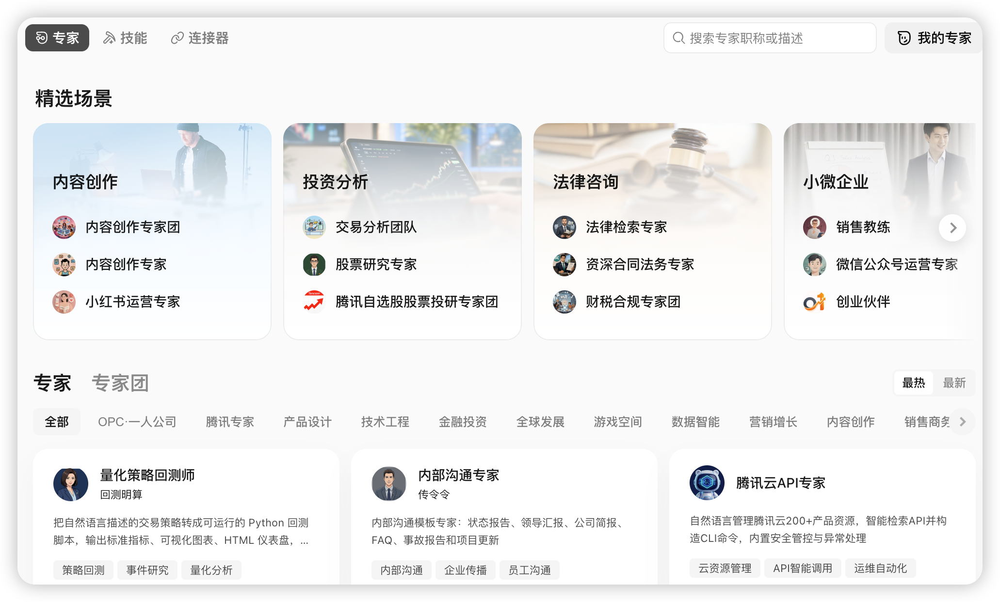
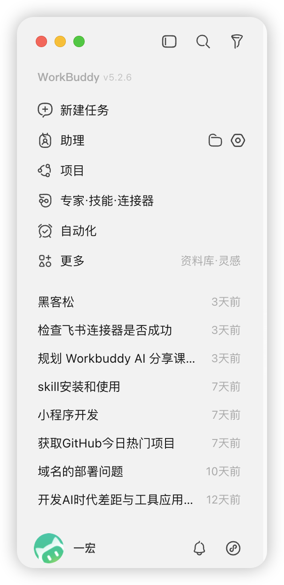
用自然语言下指令
- 可以打字，也能传文件、贴图片、发链接当上下文。
- 回复时你会看到它的思考过程与中间步骤——别慌，它在「干活」，不是卡了。
- 想纠正就接着说，像跟同事聊天一样。
- 多说一句：说清背景 + 目标 + 约束，结果天差地别（下一课专门讲）。
破除陌生感：在对话区打一句「你好，你是谁」，看它怎么回。
真实对话区：输入框 + 上下文 + 工作空间选择。
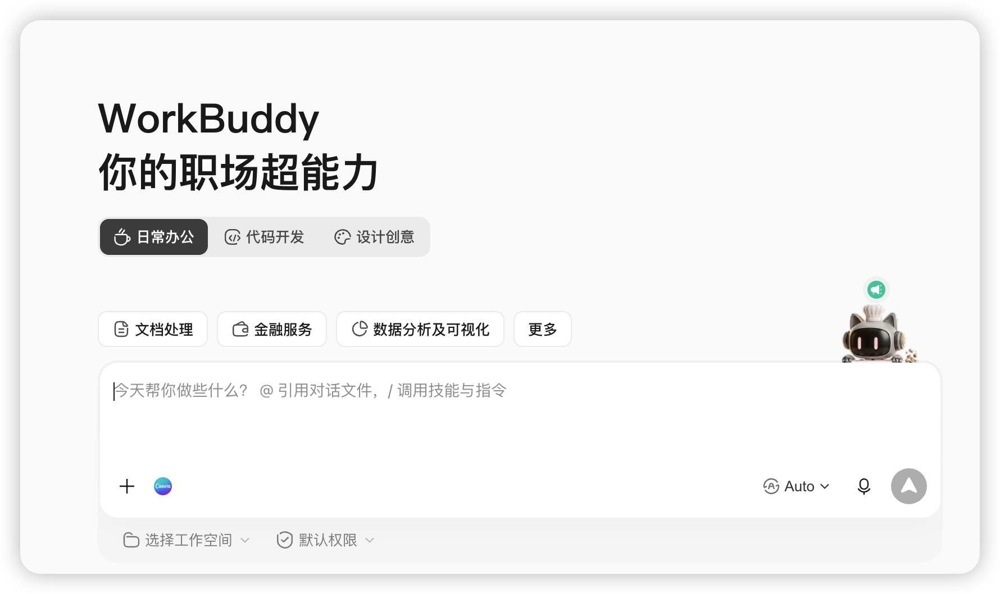
右边是你的成果展厅
WorkBuddy 生成的网页、PPT、文档、图片、表格，会直接在这里预览。
预览区不是终点
它是验收台——看效果，不对就回到中间说「第几页改成…」。
生成 → 预览 → 纠偏
给商户交付，靠的就是这一套闭环。
它干完的活，去哪看？右边。
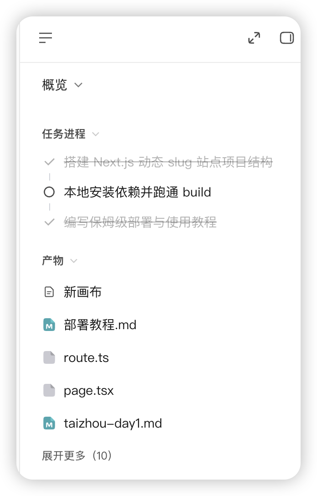
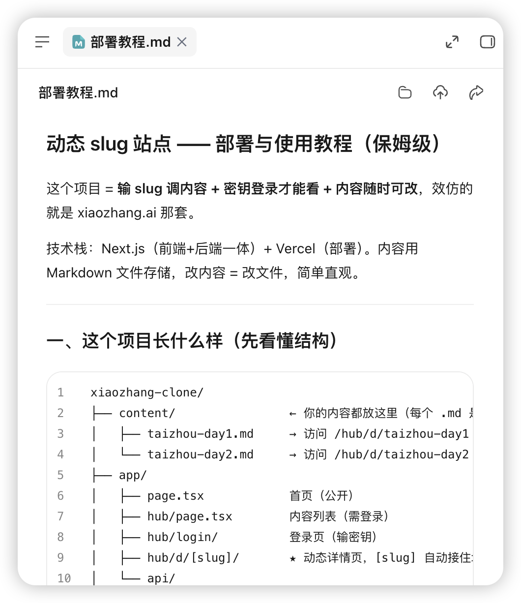
把出厂设置变成你的助手
远程助理
云上分身——不在电脑前也能被调用、接消息、跑自动化。
个性化
调性格 / 默认模式 / 语言，一次设置长期生效。
建议默认模式先设 Craft——新人最稳的起点。
当场做：进入设置，把「默认工作模式」先设为 Craft（你说我做）。
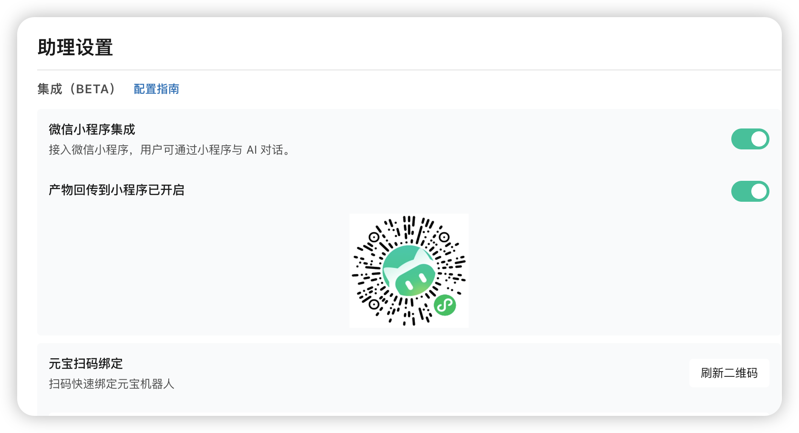
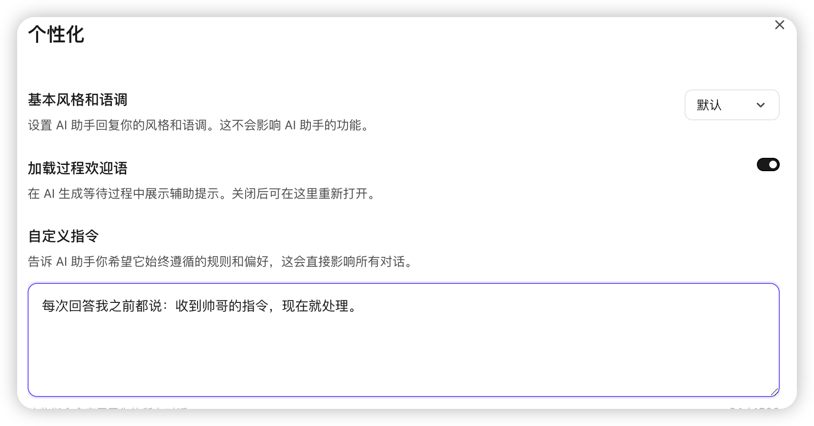
几个我强烈建议现在就动的
- 通知与隐私——决定远程时它能否给你推消息。
- 记忆开关——是否允许它记住你的偏好（下一站细讲）。
- 默认输出语言 / 格式——常交中文稿，就别让它默认英文。
这些不是炫技，是让你少说废话、它少猜你的意思。
三种「工作性格」，对应不同任务
你下指令，它立刻执行。适合目标清楚的小事。
先出方案给你看，你认可了再干。适合复杂多步任务。
它只分析、不改动。适合只想听建议、不敢让它动时。
选对模式，效率翻倍；选错，要么白等，要么白干。
适合你已经想明白要什么。若自己都模糊，用它易「做完了但不是你要的」。
实操：用 Craft 模式发一句清晰指令（如改文案 / 生成海报），看它秒回。
新人记住：拿不准就先 Plan，想清楚了再 Craft。
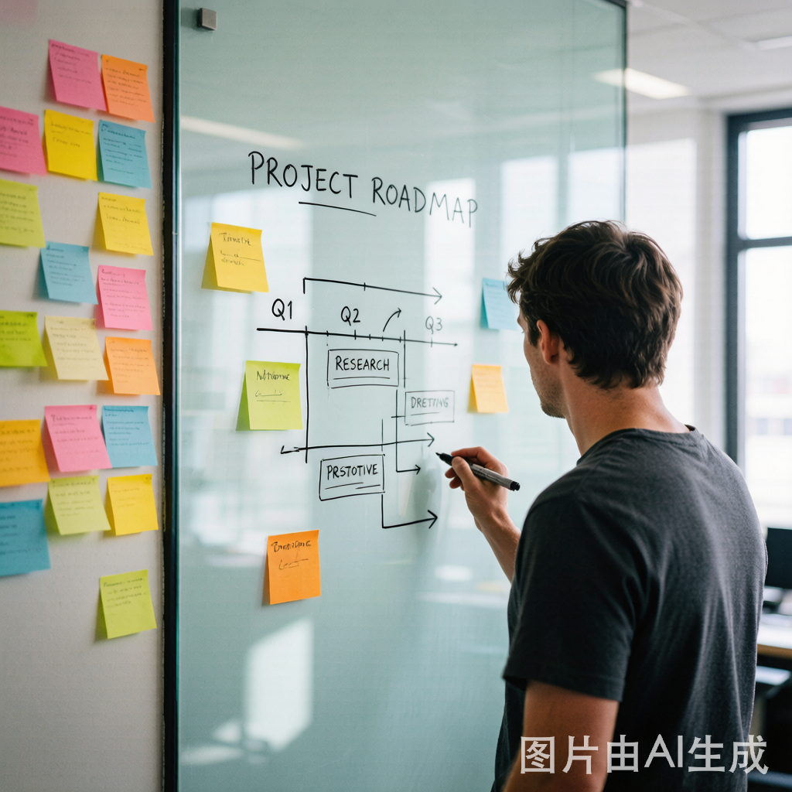
只读 · 无副作用
「这份合同有没有风险」「这个方案行不行」——它给判断，绝不动手。
安全顾问
改老板文档前，先问 Ask 一遍「哪里要改」，心里有数了再换 Craft 去改。
当你还不敢让它动手的时候，Ask 是你的安全选项。
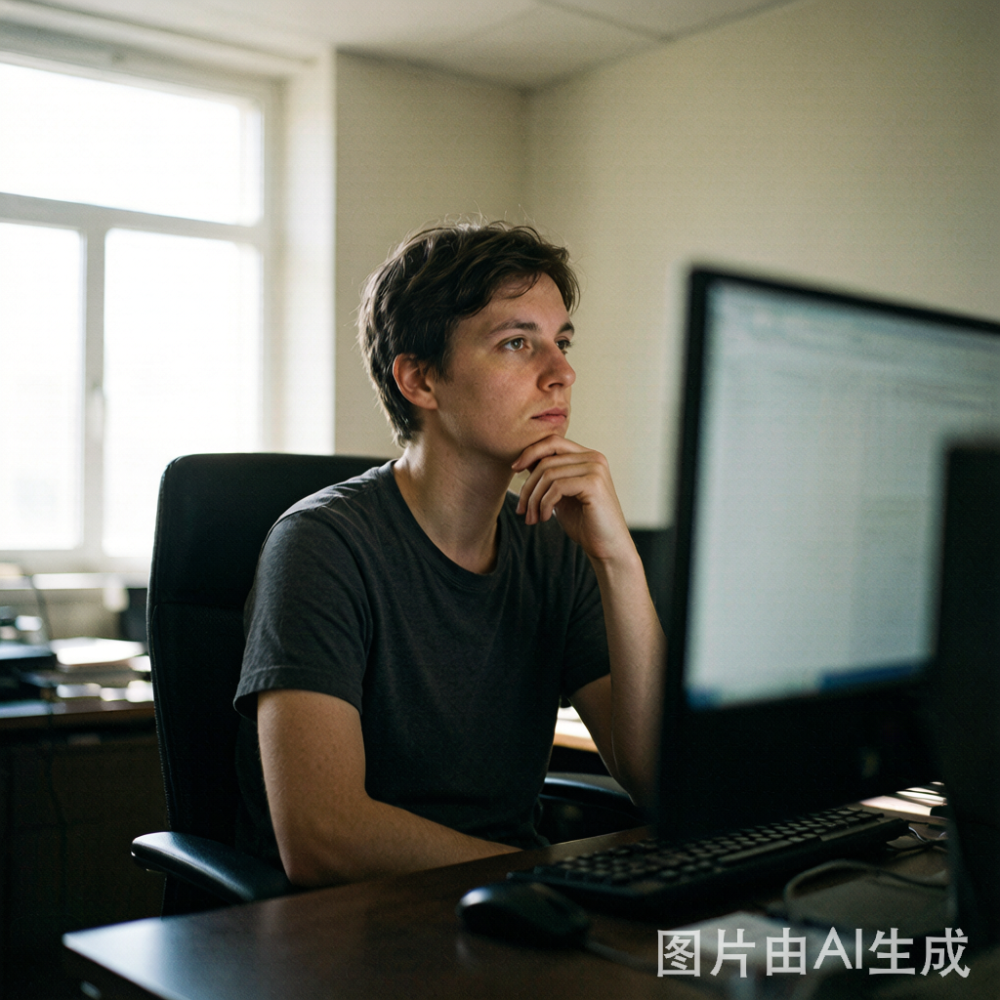
任务来了，点哪个？
快速问答：给老板做年度总结 → 选 Plan；把口号翻成英文 → 选 Craft。
让它记住你，少交代一遍背景
知识库
上传文件（文档 / 表格 / 资料）建库，它基于这些资料回答——像给助手发了参考资料。
越懂你
记忆力
记住你的偏好与约定——爱用中文、这家店卖奶茶、讨厌夸大宣传。下次不用重说。
实操建议：项目资料进知识库，个人习惯开记忆力。
当场做：打开「记忆」开关（呼应 P12），并说「记住：我是做校园周边商户服务的」测试它。
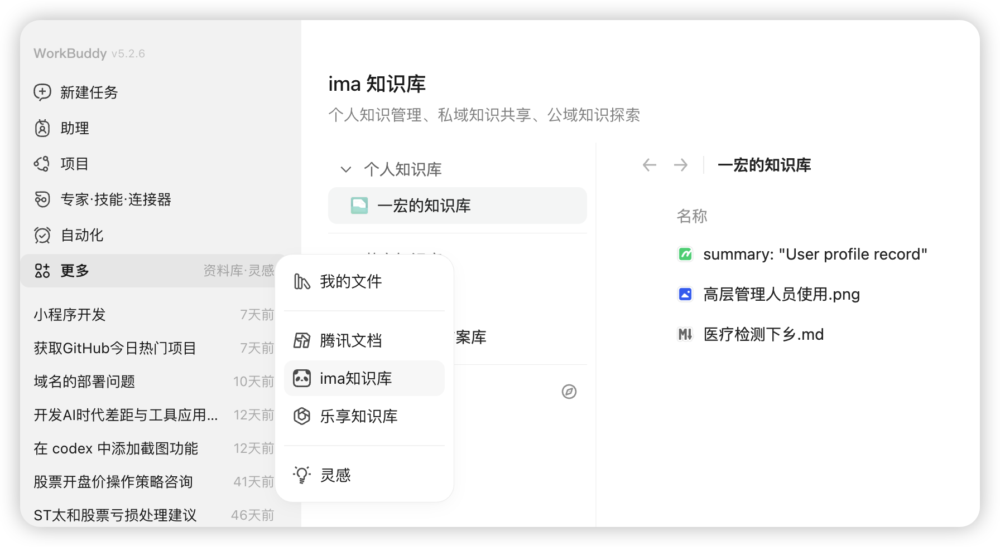
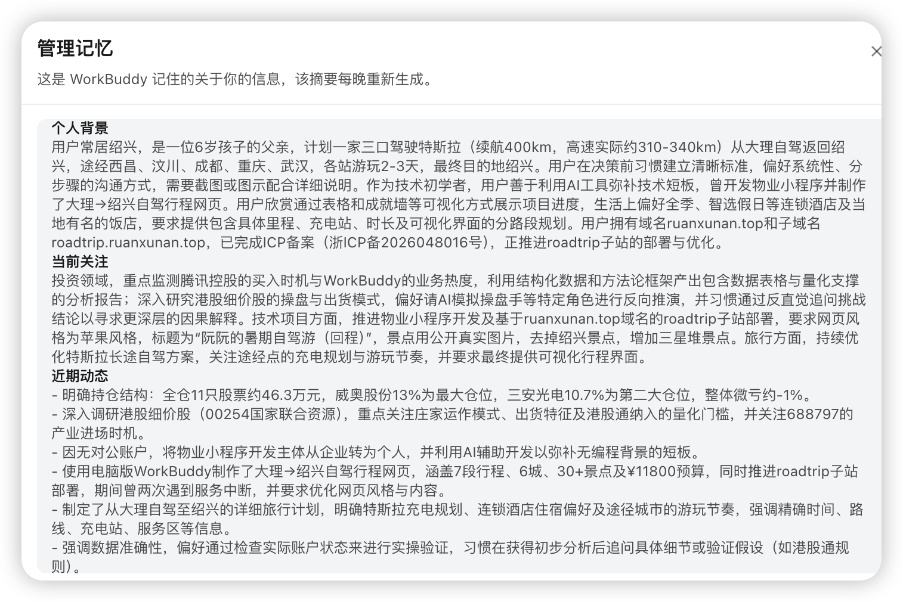
「我的」，是你在这款产品里的家
简单说：「我的」管你的资产、你的成长、你的伙伴。
点开「新手任务」：挑一个现在就能完成的（如「完成首次对话」）。
今天你至少带走三件事
毕业动作：用 Craft 模式对它说「介绍一下你自己」。课后任务：把今天学的三区画一张草图发群里。